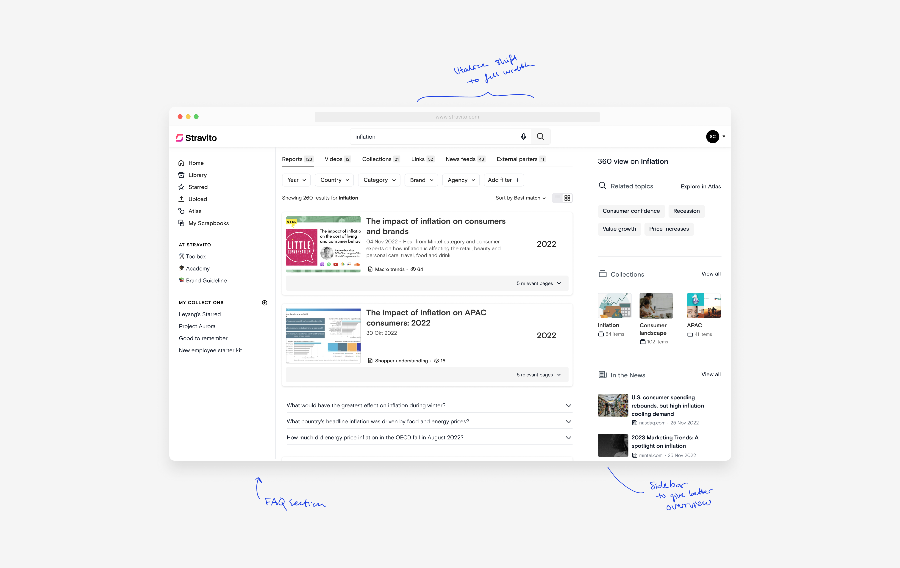
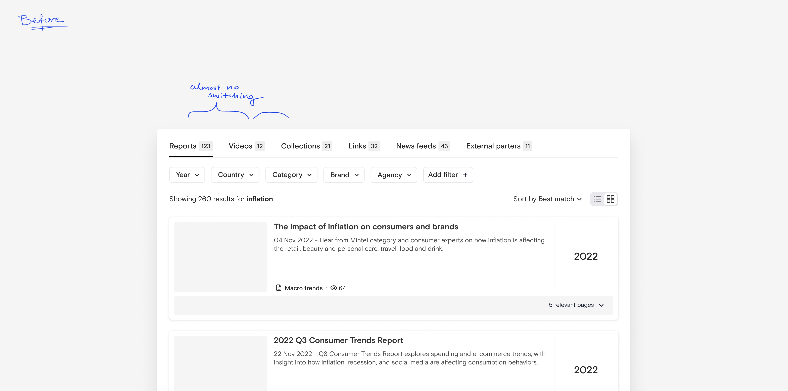
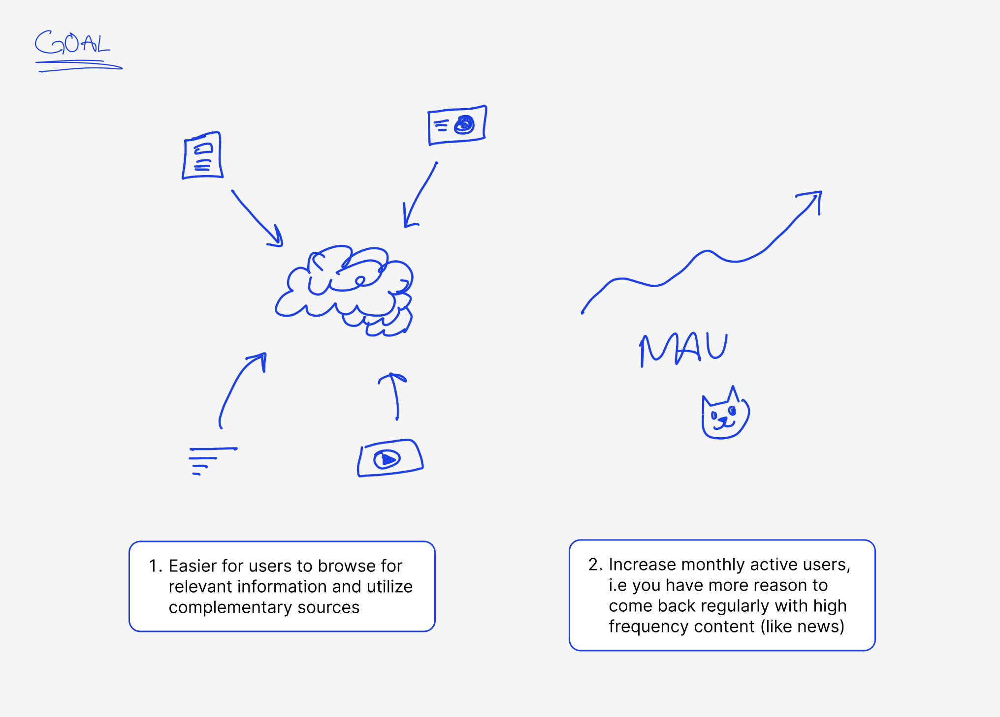
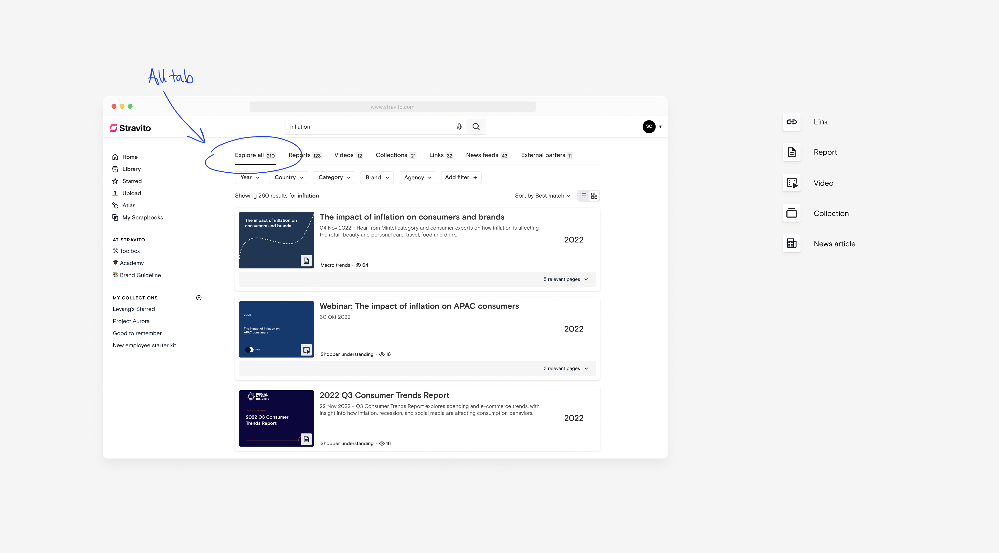
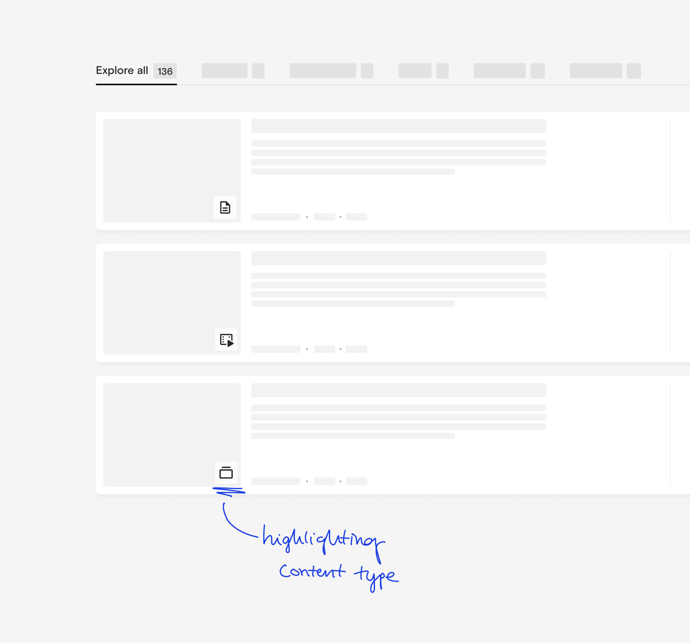
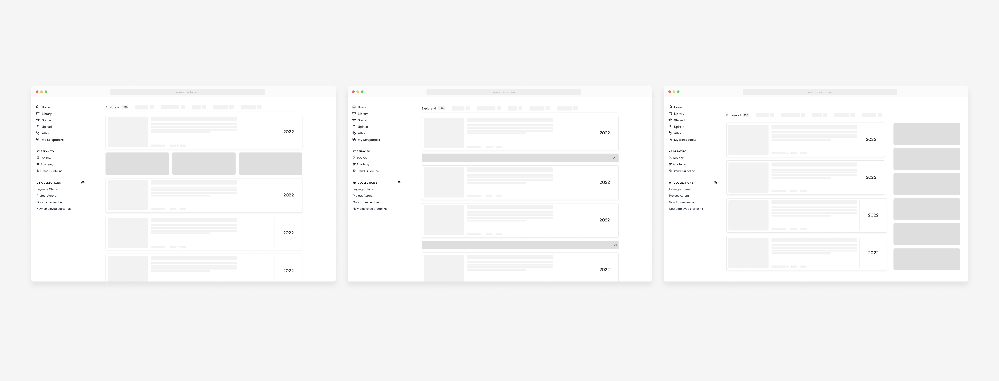
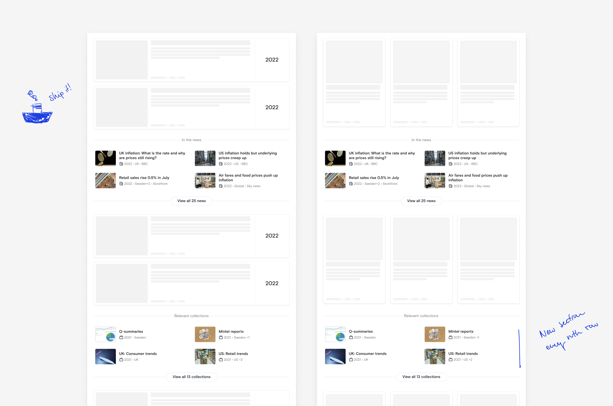
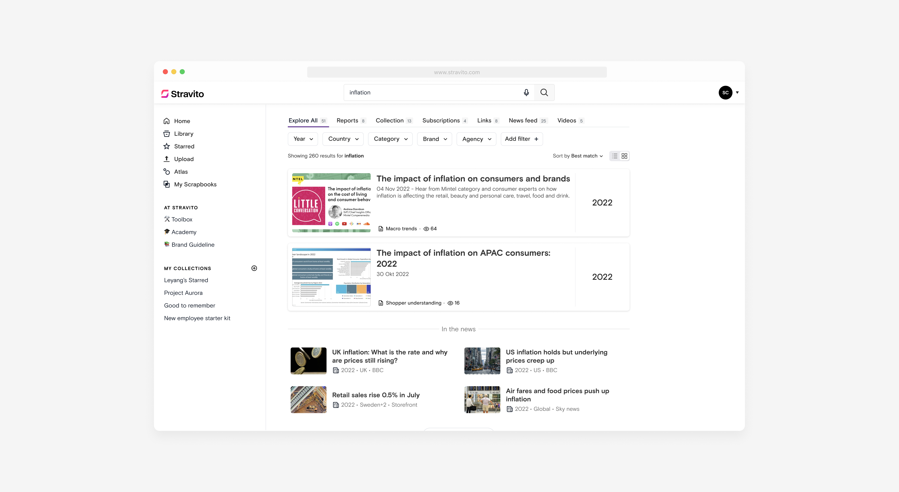
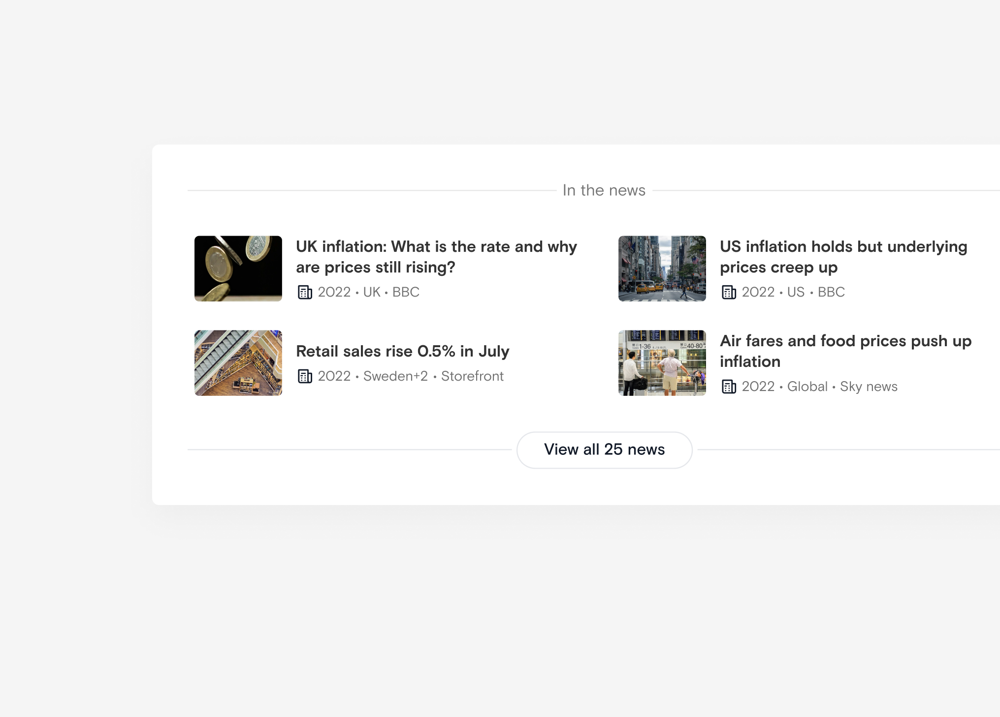

Stravito
Searching across different content types
Stravito is an insights management platform helping market insights team utalizing (expensive) insights report and studies. While these reports are core to support new projects, it's often valuable to bring in different perspectives and sources. What if they could do this directly in Stravito?

Why u not switching tabs tho? (i.e. the problem)
Secondary sources (video, news etc.) had already been integrated, but the % of people switching tabs was tiny. We still belived that these complementary sources was valuable, and took a bet on trying to make it easier for users to synthesise findings across different sources. On the business side, frequently uptaded sources (like news articles) also means a reason to use the platform more often, creating an opportunity to increase monthly active users. Are the tabs too hidden?


Experimet 1: what if we just do an all tab? (Hint, it failed)
The most straight forward solution is to just have an “all results” tab, so I created a prototype and let a few customers try it. Since searching is really content depended, I took a bit of extra time simulating branding and actual content from their real platform (not shown here).


Two main learnings from testing the prototype
Exploring a new direction: stronger hiearchy between primary and secondary content
At the time we used different search queries for different content types which prevented us from cross-ranking the results. So to get somthing we could learn from out in production as quickly as possible, we decided on injecting secondary content at a fixed intervall (starting with every 3rd row).

What we shipped: mini-card sections
Following up on the launch we saw a 400% increase in usage of news content. To be frank, it was still just a shift from a very small percentage to a slighly bigger percentage. However, it's still a great leading indicator for a positive trend.



What could be next? Exploring a potential future direction
We were soon shifting from fixed width to responsive full-width, so I played around with how we could utilize the space more efficient with a side panel. From discussions with the PM, we also got curious about generating FAQ-sections based on the search input. I included it in a prototype and users reacted with excitment.
2025 update: this project was before the big AI-hype-season, and this idea have since been turned into a way more sophisticated AI-agent by the amazing Stravito team.